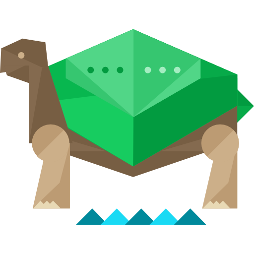
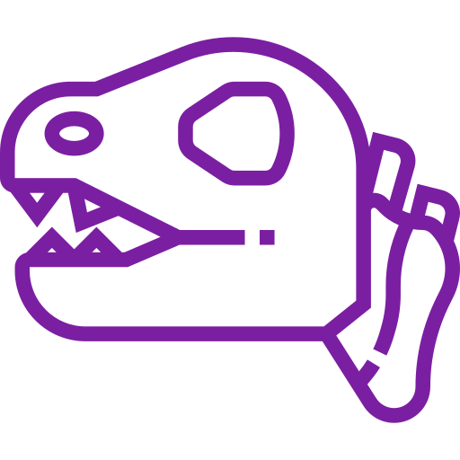
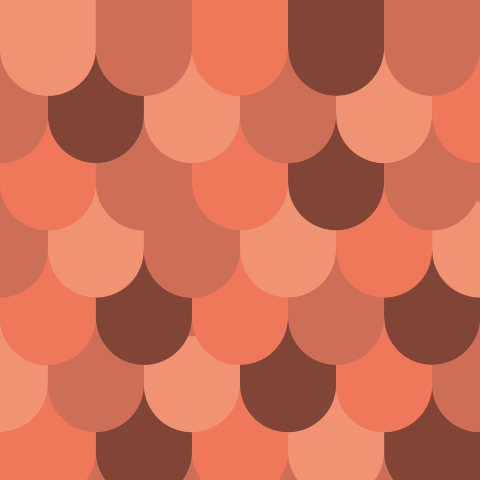

<mat-drawer-container class="nav-container">
  <mat-drawer mode="side" opened>
    <mat-toolbar class="nav-title" color="primary">Systems</mat-toolbar>
    <mat-action-list dense>
      <button class="nav-link" mat-list-item>Bones of the Tarrasque</button>
      <button class="nav-link" class="disabled" mat-list-item disabled>Flesh of the Tarrasque</button>
      <button class="nav-link" class="disabled" mat-list-item disabled>Grove of the Tarrasque</button>
      <button class="nav-link" class="disabled" mat-list-item disabled>DM/GM Screen</button>
      <button class="nav-link" class="disabled" mat-list-item disabled>Character Builder</button>
      <button class="nav-link" class="disabled" mat-list-item disabled>Dice Roller</button>
      <button class="nav-link" class="disabled" mat-list-item disabled>Spell Card Maker</button>
      <button class="nav-link" class="disabled" mat-list-item disabled>Sheet Maker</button>
    </mat-action-list>
  </mat-drawer>
  <mat-drawer-content>
    <!-- <router-outlet></router-outlet> -->
  </mat-drawer-content>
</mat-drawer-container>

  <!-- 
  
   -->
